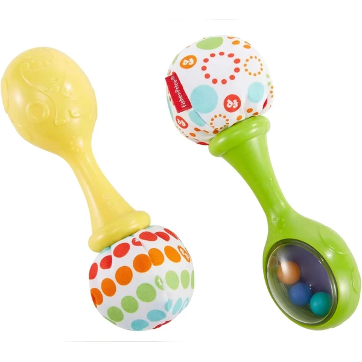
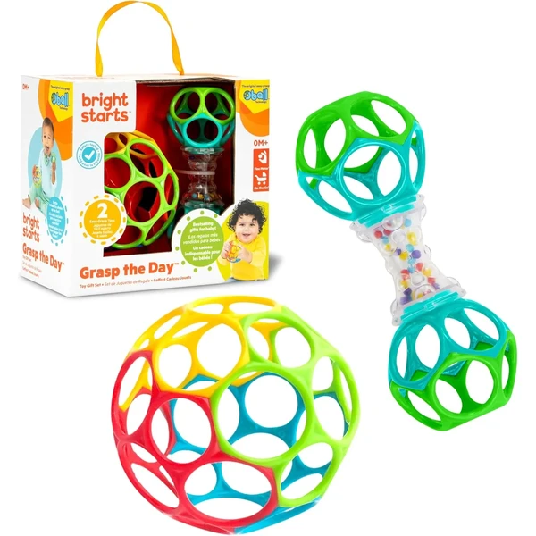
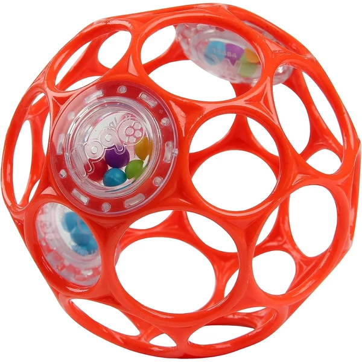
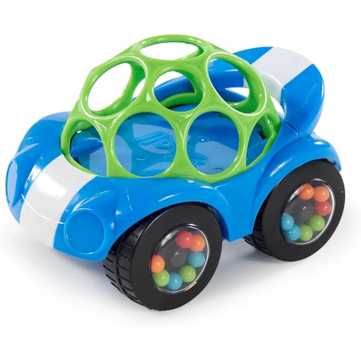
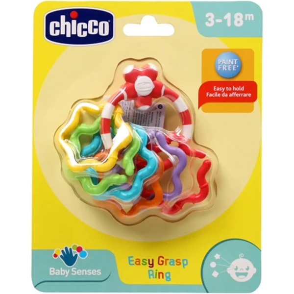

Maracas musicales Fisher-Price
Dos maracas de tamaño pequeño con cuentas de colores en su interior, pensadas para las primeras manitas. Al agitarlas producen un sonido suave que invita al bebé a experimentar con el movimiento.
⭐ ¿Por qué nos gusta?
- ✔ Tamaño adaptado a manos pequeñas.
- ✔ Sonido suave que estimula el oído.
- ✔ Favorece la motricidad gruesa.
💬 Lo que más destacan las familias
Muchos padres coinciden en que su tamaño es justo el adecuado para las primeras semanas, cuando el bebé todavía está aprendiendo a sujetar cosas. El sonido suave también gusta porque anima a agitarlas sin llegar a resultar molesto.
Ver en Amazon

Pack pelota y sonajero Bright Starts
Un pack de dos juguetes Oball: una pelota de agarre fácil y un sonajero con forma de pesa. Pensado para llevar a cualquier parte y ofrecer dos formas distintas de juego desde el nacimiento.
⭐ ¿Por qué nos gusta?
- ✔ Incluye dos juguetes en un mismo pack.
- ✔ Diseño de agarre fácil para manos pequeñas.
- ✔ Ligero y sencillo de transportar.
💬 Lo que más destacan las familias
Una de las cosas más comentadas es lo práctico de tener dos juguetes distintos en el mismo pack, así siempre hay una opción de recambio a mano. El diseño de agarre fácil también se valora porque el bebé lo sujeta solo casi desde el principio.
Ver en Amazon

Pelota sonajero Oball
Una pelota flexible con agujeros de agarre y tres sonajeros en su interior. Se puede aplastar y deformar sin problema, ya que siempre recupera su forma, lo que la hace resistente a los primeros achuchones.
⭐ ¿Por qué nos gusta?
- ✔ Fácil de agarrar gracias a sus agujeros.
- ✔ Favorece el desarrollo psicomotor.
- ✔ Flexible y resistente a mordiscos y golpes.
💬 Lo que más destacan las familias
Los compradores valoran especialmente que aguante bien los primeros achuchones sin romperse ni deformarse. También se comenta que los agujeros hacen que sea de los primeros juguetes que el bebé consigue sujetar sin ayuda.
Ver en Amazon

Cochecito sonajero Oball
Un cochecito de juguete con ruedas que incluyen sonajeros de colores y una estructura blanda fácil de agarrar. Pensado para bebés que ya empiezan a moverse y a interesarse por el gateo.
⭐ ¿Por qué nos gusta?
- ✔ Ruedas con sonajero integrado.
- ✔ Favorece la motricidad fina y espacial.
- ✔ Estructura blanda y segura para gatear.
💬 Lo que más destacan las familias
Entre los comentarios más habituales aparece que engancha mucho cuando el bebé empieza a gatear, porque el sonido de las ruedas le anima a perseguirlo. También gusta que la estructura sea blanda, así los primeros golpes no dan ningún susto.
Ver en Amazon

Anillos sonajero Chicco
Un llavero con seis anillas de colores ligeras que se pueden separar de la estructura, pensado para estimular la coordinación manual. Su plástico blando también sirve de alivio durante la dentición.
⭐ ¿Por qué nos gusta?
- ✔ Seis anillas de colores fáciles de agarrar.
- ✔ Se pueden separar para crear una cadena.
- ✔ Plástico blando apto para morder.
💬 Lo que más destacan las familias
Se repite bastante el comentario de que las anillas dan mucho juego porque se pueden separar y combinar de formas distintas. También se valora que el plástico blando sirva de paso para calmar las encías en los días de dentición.
Ver en Amazon

Sonajero Oball Easy Grasp Bright Starts
Un sonajero transparente con dos mini Oballs flexibles y cuentas de colores en su interior que producen sonido al moverlo. Pensado para que el bebé vea y escuche a la vez que lo agarra.
⭐ ¿Por qué nos gusta?
- ✔ Dos mini Oballs flexibles y fáciles de morder.
- ✔ Cuentas de colores visibles a través del sonajero.
- ✔ Sonido suave que entretiene al bebé.
💬 Lo que más destacan las familias
No es raro encontrar comentarios sobre lo mucho que llaman la atención las cuentas de colores en movimiento, casi tanto como el propio sonido. Los mini Oballs flexibles también gustan porque son fáciles de morder sin hacerse daño.
Ver en Amazon